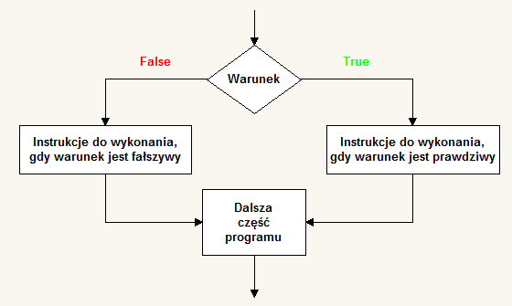
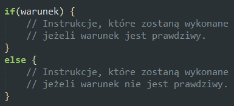

Instrukcja warunkowa if...else
Instrukcja warunkowa if...else pozwala na wykonanie jednego z bloków instrukcji w zależności od spełnienia lub nie spełnienia podanego warunku.
Więcej o instrukcji warunkowej  Zadanie 2.
W bloku znajdującym się niżej dołącz skrypt, w którym rozwiążesz zadanie 1 stosując instrukcję if...else.